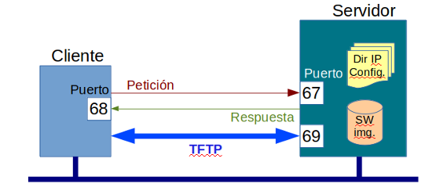
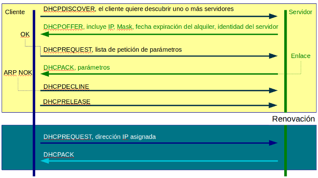

Protocolo DHCP¶
RFC2131 DHCP RFC2132 Opciones DHCP
Introducción¶
Las demandas de conectividad, cambios, movimientos y reconfiguraciones de red, que caracterizan el entorno de red actual, necesitan de mecanismos que permitan automatizar la configuración de nodos y la distribución de sistema operativo y software en la red.
Algunos equipos necesitan pocas variables de configuración antes de arrancar, otros, una lista más detallada, a veces, se necesita descargar el sistema operativo completo. La forma mas efectiva de conseguirlo es configurar un servidor de arranque y guardar los datos de configuración y el software necesario, al inicializarse, las estaciones de red interactúan con el servidor de arranque de donde descargan los parámetros de configuración y el software necesario.
BOOTP fue el primer estándar para el arranque en entornos TCP/IP, ofrece a los dispositivos, todos los parámetros básicos de configuración y la descarga de software.
DHCP, extendió las funciones de BOOTP, automatizando la asignación y protegiendo la configuración de IP contra fallos.
Versión inicial de BOOTP¶
BOOTP se diseño para estaciones de trabajo sin disco, que necesitaban un arranque automático con lo básico, aunque, no se tardo mucho tiempo en incluir parámetros como la mascara de subred, el gateway por defecto, dirección del servidor de descarga TFTP, etc.
El procedimiento era:
Cliente difunde una petición de información en un mensaje UDP
El servidor de devuelve la dirección IP y los datos necesarios.
Protocolo BOOTP¶
Es un protocolo simple de pregunta/respuesta, el cliente transmite un mensaje de petición de arranque desde el puerto 68 al puerto 67 del servidor y el servidor, responde con un mensaje de respuesta al puerto 68.

Se utiliza el mismo mensaje para la petición que para la respuesta.
El tipo de mensaje, indica si es una petición (1) o una respuesta (2).
El byte de saltos, es unsado por DHCP relay para definir el número de redes que se debe cruzar hasta alcanzar el servidor DHCP.
El campo Transaction ID se utiliza para hacer coincidir las peticiones con las respuestas.
El bit mas significativo del campo flags, se utiliza como indicador de broadcast, normalmente, los servidores DHCP intentan transportar los mensajes a un cliente mediante unicast, con la dirección IP asignada y la dirección hardware del cliente y al puerto 68, si un cliente es incapaz de recibir un datagrama unicast hasta que se sepa su dirección IP, se debe activar el bit de broadcast para indicar al servidor que debe enviar la respuesta con la dirección de broadcast.
La dirección IP del cliente la puede fijar el cliente a irá todo a 0.
El campo Tu dirección IP, lo fija el servidor si la dirección del cliente es 0.0.0.0
Mejoras de DHCP¶
DHCP extiende las posibilidades de BOOTP, definido en el RFC 2131, permite
Una administración mas sencilla
Configuración automatizada
Posibilidad de que el cliente solicite los valores de ciertos parámetros
Nuevos tipos de mensajes
Permite tres tipos de asignación
Asignación manual, una dirección que ha sido introducida manualmente en el servidor, se asigna permanentemente al cliente
Asignación automática, se selecciona una dirección IP de las que estan disponibles en el servidor y se asigna permenentemente al cliente
Asignación dinámica, se asigna una dirección IP durante un tiempo límite. Aparece el concepto de alquiler, que indica el período de tiempo que un cliente puede disponer de una dirección IP.
En el campo opciones, se define el tipo de mensaje
DHCPDISCOVER, el cliente envía este tipo de mensaje para descubrir servidores
DHCPOFFER, el servidor responde y envía la configuración IP con sus parámetros
DHCPREQUEST, el cliente envía una petición de más parámetros o la renovación de la IP asignada
DHCPACK, el servidor esta de acuerdo
DHCPNACK, el servidor rehusa la petición
DHCPINFO, un cliente configurado de forma estática, puede pedir datos que le falten con este mensaje, el servidor devolverá los parámetros adecuados con DCHPACK.
DHCPDECLINE, el cliente rehusa la dirección de red porque no es aceptable (probablemente descubrió que es dirección IP ya estaba signada mediante un ARP gratuito)
DHCPRELEASE, el cliente ya no necesita esa dirección IP y la libera.
Tmporizadores¶
En la asignación dinámica, entran en juego tres temporizadores
Lease time (LT), define cuanto tiempo permite a un cliente usar la dirección asignada
Renewal time (T1), por defecto es 0,5*LT, que una vez superado se envía un DHCPREQUEST por unicast
Rebind time (T2), por defecto es 0,875 * LT, que una vez superado, envía un DHCPREQUEST por multicast, si el cliente tampoco recibe un DHCPACK del servidor, se debe volver al proceso inicial con un DHCPDISCOVER.